Make your MacBook keyboard flash when Claude Code needs you
kbflash turns your keyboard backlight into a status light. Claude Code, Codex, a long build or your own script: when it's done, the keys blink, then go back exactly as they were.
Flashing lights
kbflash makes your keyboard backlight flash. If you have photosensitive epilepsy, or flashing
or flickering light affects you, please don't use it without talking to your doctor first, and
only in a form that's safe for you. The breathe pattern fades instead of flashing,
and you can slow or dim any pattern. Stop straight away if you feel unwell.

What the keyboard does
It works with whatever state the backlight is in, and always ends on your level.

Lit
Dips off and back to your level.
Dark
Pulses to full, then back to dark.
Timed out
Wakes at your level, flashes, then sleeps again.
How to set it up
- Install it. In Terminal:
It needs Apple's command line tools (git clone https://github.com/Kolomaster68/kbflash.git && ./kbflash/install.shxcode-select --install). - Choose what flashes it. The installer asks about Claude Code, Codex, and terminal commands that run longer than 30 seconds. Say yes to the ones you want.
- Work as usual. When something's done or needs you, the keyboard tells you.
Use it with anything
Anything that can run a command can flash your keyboard.
kbflash -- make build # done or error, by how it went
npm test; kbflash done # or just after it
kbflash --until-back 30 ask # keep flashing till you're backOther agents' hooks, Shortcuts, cron, git hooks, Hammerspoon: point them at
kbflash and a pattern name.
Make the flashes yours
Patterns are a line each in ~/.config/kbflash/patterns. Edit them, or add your own.
done = off/120 on/120 x3
ask = off/150 on/250 x2
error = off/120 on/600 off/120 on/150 off/120 on/600
breathe = ~off/700 ~on/700 x2
heartbeat = off/100 on/100 off/100 on/100 off/700 x2on/150 | Light for 150 ms. Your level if the keyboard is lit, full if it's dark. |
off/150 | Dark for 150 ms. |
me/150, 40/150 | Your own level, or an exact percent. |
~on/700 | Fade into it instead of switching. |
x3 | Repeat the steps since the last x. |
Your work stays private
It only learns that something happened
Hooks run kbflash with a pattern name, nothing else. It never sees your prompts, code or
commands, and nothing is stored or sent anywhere. ./install.sh --uninstall removes
every hook it added.
Questions
Which Macs does it work on?
MacBooks with a backlit keyboard. It's tested on an M5 MacBook Pro with macOS 27. External keyboards aren't supported.
Can it damage the backlight?
No. The keys are lit by LEDs, and macOS already dims, brightens and switches them off all day. A few short flashes is nothing next to that.
What if I've been away a long time?
Once the keyboard times out, it still flashes: kbflash wakes it, flashes, then lets it time out again. Once your screen goes to sleep it can't, because macOS keeps the keyboard off with the screen, so kbflash waits and touches nothing.
Will the brightness slider still work?
Yes. kbflash sets brightness the way the slider does and ends on your level. Your keys, slider and auto-brightness all keep working.
Why doesn't it flash in a bright room?
With "Adjust keyboard brightness in low light" on, macOS holds the backlight off in bright light and ignores changes. kbflash leaves it be, and a flash would be hard to see then anyway.
Will it keep working after macOS updates?
Probably, but it uses a private Apple interface, so an update could change it. If that happens it flashes less or not at all, and touches nothing else.
How much is it?
Free and open source, under the MIT license.